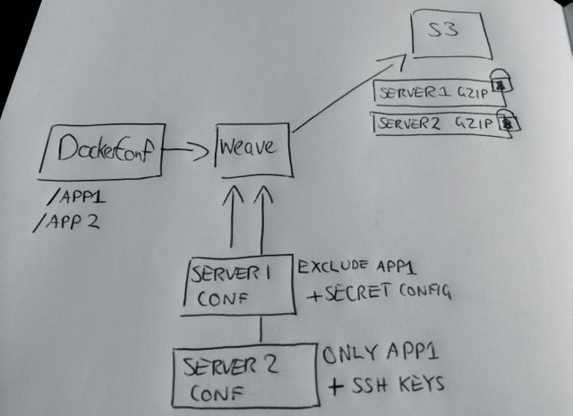
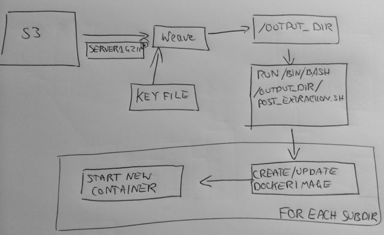
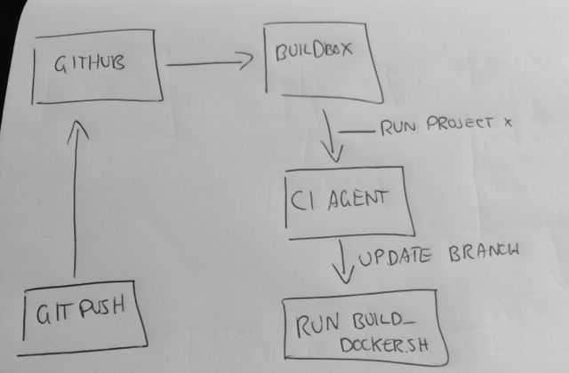

The problem
I have two servers in different areas running region specific Docker configurations. I want specific Docker configurations on specific hosts without them seeing the rest of the Docker files, and I don't want the servers to have to be pushed configuration. They should poll for new configuration, pull it down and apply the latest.
I want to push the latest configuration to Github, have it compiled, packaged up and the relevant servers pick it up.
weave
weave is a configuration packaging tool. Given a source directory, configuration sets and some configuration it will generate tar-gzipped packages for consumption by the relevant nodes. It can optionally encrypt the packages as well as upload them to S3.
weave can solve a few different scenarios outside of my current scenario
- A web application is customised and distributed to a different customer's servers. weave can interleave your config directories, asset directories into one deployable package per customers
- You want to ensure that only server A, B and C get the right SSH keys they need; you can use weave to interleave the source directory with the correct deploy key.
So weave is a tool that merges a source directory and the relevant configuration directory together to produce one final directory per configuration. If either directories contain a post_extraction.sh or pre_extraction.sh script then they will be called by the client at the relevant times.
weave is written in Go and is attainable via
go get -u github.com/callumj/weaveweave then functions as a compiler and client. The compiler takes in a config file and then generates the compiled packages as instructed. The client is responsible for decrypting the file if needed, extracting the package and running post_extaction.sh as needed. When given a HTTP address, weave will try to make use of ETags to only run when needed, if the ETag matches then the client silently quits.
The weave client doesn't use any configuration file or daemon, it's just called with the location of the package, the final output directory and (optionally) a path to the decryption key. The rest is controlled by pre_extraction and post_extraction shell scripts which are bundled into the configuration package.
I have weave setup under a cron job to download the package every 30 minutes, if the package is updated then post_extraction.sh is called.
With weave I've got packaged configuration sets that limit the responsibility of each server.

post_extraction.sh and Docker
post_extraction.sh is a basic script that loops through each directory with a Dockerfile and then updates/installs the running Docker containers to the latest version. While Dockerfiles don't have any versioning support I make use a VERSION comment that the script parses and uses as a docker contain tag, e.g. callumjcom-deploy:v0.04.
The post_extraction.sh is a basic shell script that loops through the folders in the working directory, looks at the Dockerfile and pulls in the VERSION comment. The script first checks if the image matching the VERRSION exists, if there's no image with the VERSION available then an image is built from the Dockerfile. Any old containers matching the name are stopped and the new container is started up with the latest VERSION.

Buildbox
Now it's pretty easy to run the weave compiler manually when I know I've changed a file, but I want a CI setup to detect the changes and run weave itself. This where Buildbox comes into play.
Buildbox is a CI service that offers a great level of control to the owner, you run the agents on your own boxes and Buildbox handles the build workflow. You specify the script to run on project build and once your agent automatically checks out the relevant branch, that script is triggered. You control the script, it could range from a simple call to RSpec, to a full blown out RSpec + production release + Capistrano deploy. You could even throw in a Pushover call at the end.
Because it's just a shell script, you could just call out to your custom tooling such as a Ruby script or Grunt buildfile.
It's elegantly simple CI, there's no plethora of configuration or no heavy JVM component. Just install the Agent on each of your nodes and configure the jobs through the Buildbox service.
With Buildbox I have a project setup that Buildbox pulls onto my agent's server, runs the build script I specify and deliver's the build results to my email address.
The build script (build_docker.sh) is a shell script that brings the weave source repository up to date locally and then runs the weave compiler against the configuration file. This is an excellent seperation of responsibility, Buildbox is the manager that brings me the latest repository and weave is worker that sends the package up.

End result
So here's the end result:
- weave gives me the capabilties to build configuration packages targeted at various "sites" or servers.
- Buildbox lets me respond to the changes in my Git repository and invoke the neccessary actions relevant.
- Docker gives fantastic tooling around container inspection.
With a few simple tools I've got a basic CI worflow up and running around Docker. When I update a Docker configuration or add a new Docker configuration, within about 30 minutes the relevant server has it up and running.
What's next? I'd like to automatically expose Docker containers to a frontend Nginx proxy as configured by a Dockerfile ENV. I think that may be suitable for a simple Go tool.
Any questions? Hit me on @callumj or contact@callumj.com.